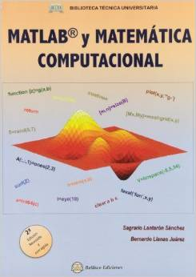
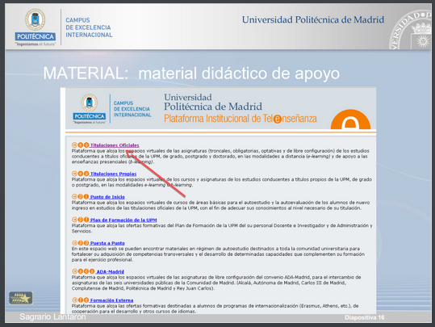
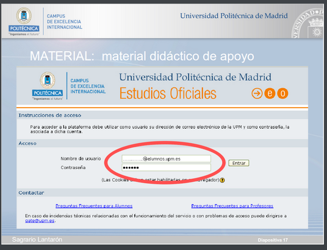

|
|
|
Departamento de
Matemática e Informática
Aplicadas a la Ingenieria Civil.
E.T.S.I. CAMINOS, CANALES
Y PUERTOS.
Universidad Politécnica
de Madrid.
|
|
|
|
Generalidades
Estudios de Grado en Ingeniería Civil y Territorial
Asignatura: Informática (6 créditos) (Primer semestre)
Departamento: Matemática e Informática Aplicadas a la Ingeniería Civil y Oceánica
Director del departamento: Manuel Pastor Pérez
Secretaria del departamento y responsable de la asignatura 'Informática': Sagrario Lantarón Sánchez
Grupo F
- Profesor: Santiago Higuera de Frutos
- 4 clases de 75 minutos semanales
- Jueves y viernes de 11:30 a 12:45 y de 13:00 a 14:15
- 2 clase teórico-prácticas en aula
- 2 clase prácticas en aula con ordenadores (Se puede traer portátil)
- Horario tutorías: Jueves y viernes de 9:45 a 11:15
- Despacho: 2ª planta de la torre
- eMail: santiago.higuera@upm.es
- twitter: @santiagohiguera
Pruebas de evaluación
Evaluación continua
- Hoja de ejercicios de evaluación continua (moodle)
- Evaluación continua - 30 % : Se realizarán una serie de pruebas a lo largo del curso de ejercicios similares a los de la hoja. Algunas de las pruebas se realizarán en ordenador.
- Exámenes parciales - 35 % + 35 %: Se realizarán dos exámenes parciales, en octubre y en diciembre. Algunos de los ejercicios se realizarán en ordenador.
- La nota será la media de los ejercicios anteriores. Si la nota media es igual o superior a 5 y no se ha obtenido menos de 3 en ninguno de los examenes se obtendr'el aprobado y no será necesario acudir al examen final
Pruebas de evaluación
Examen final
- Examen final - 100 % : Los alumnos que no superen la evaluación continua dispondrán de un examen final de la asignatura.
- Constará de dos partes:
- Examen escrito 70%
- Examen en ordenador 30%
- Nota final: ponderación de las anteriores
Contenido de la asignatura
Objetivo principal: conceptos de cálculo científico y programación para aplicar como herramienta durante los estudios y posteriormente (vida laboral)
Se aprenderá a utilizar el lenguaje 'm', que es el lenguaje que incorporan tanto Matlab como GNU Octave.
El lenguaje m
- m es un lenguaje de programación, un conjunto de reglas para escribir programas de ordenador
- El lenguaje m fue creado en 1970 para proporcionar un sencillo acceso al software de matrices LINPACK y EISPACK sin tener que usar Fortran
- m es un lenguaje de programación orientado al Cálculo Numérico
- m es un lenguaje de programación para realizar programas pequeños y simples
- La utilización de m está muy extendida en el ámbito de la Ingeniería
- m dispone de una extensa colección de librerías que cubren muchos ámbitos de la Ciencia e Ingeniería
MATLAB
- MATLAB es un programa de cálculo numérico diseñado para trabajar con matrices (MATLAB = abreviatura de MATrix LABoratory)
- Fue creado por Cleve Moler en 1984
- Es un software propietario
- Está disponible para las plataformas Windows, Mac OS X y GNU/Linux
- Utiliza el lenguaje m
- Herramientas adicionales:
- Simulink: plataforma de simulación multidominio
- GUIDE: editor de interfaces de usuario - GUI
GNU Octave
- GNU Octave es un programa de cálculo numérico
- Octave es un proyecto de software libre desarrollado por John W. Eaton y muchos otros.
- Está disponible para las plataformas Windows, Mac OS X y GNU/Linux
- Utiliza el lenguaje m compatible con MATLAB (No es compatible al 100%)
- Utiliza GNU Plot para proporcionar gráficos
Instalación de Octave UPM
Recursos en la red
El moodle de la asignatura dispone de numeroso material de aprendizaje, incluyendo manuales, ejercicios, vídeos, etc
En la red se encuentra mucho material. Son de interés los siguientes enlaces:
Libros

Autores: Sagrario Lantarón y Bernardo Llanas
Es el libro de referencia para la asignatura
Disponible en la biblioteca
moodle de la UPM
Importante:Tener cuenta de correo @alumnos.upm.es

